Thomas de Sancta Maria · Valladolid, 1565 · Chapters XIII to XIX
Thomas de Sancta Maria (Madrid, ? — Ribadavia, 1570), Dominican friar,
organist in the monasteries of Castile. His work — examined and approved by the royal
organists Antonio and Juan de Cabezón — is
the oldest and most detailed description of keyboard technique. Although directed
primarily at the clavichord, his
recommendations are equally useful for the harpsichord
and the organ.
📖 Translated excerpt
This edition translates Chapters XIII to XIX, which deal specifically with keyboard technique,
ornaments, and fingering. The Libro Llamado Arte de tañer Fantasía has two parts;
the first (up to Chapter XII) covers rudiments of music and the second covers harmonic and
contrapuntal procedures.
The eight conditions for playing with complete perfection
In order for all music to have that grace and life which it deserves, it is necessary
to play with all the refinement that is required for it.
The difference is clear between the same work played by a perfect musician or by a crude one:
played by the perfect, "it seems very elevated and excellent"; by the imperfect, "low and crude",
as if they were entirely different works.
The eight conditions
1
Playing in Meter
Maintaining the meter and pulse — the "downbeat" at the beginning of the measure and the "upbeat" at the mid-measure.
2
Proper hand placement
Hands in a claw shape, "like a cat's hand (cat's claw)"; arched fingers; low palms; thumb and little finger drawn in. Ch. XIV.
3
Striking the keys correctly
With the fingertip flesh, not the nails, without striking from above, at the edge of the keys. Ch. XV.
4
Playing with clarity and distinction
Each finger lifts before the next strikes, avoiding blurred notes. Ch. XVI.
5
Running the hands well
Going up and down the keyboard with appropriate fingers, turning the hands slightly. Ch. XVII.
6
Striking with suitable fingers
The heart of the treatise: complete fingering tables for every context. Ch. XVIII.
7
Playing with elegance
The three ways of "lingering and running" quarter notes and eighth notes — the origin of notes inégales. Ch. XIX.
8
Making good Redoublings and Quebros
The two types of ornament systematized by Sancta Maria — a direct antecedent of Baroque trills and mordents. Ch. XIX[B].
★ The three principal conditions
At the end of the treatise, Sancta Maria singles out three as most essential: (1) keeping
the hands very drawn in; (2) not striking the notes from above, keeping the fingers
close to the keys; (3) striking the keys with the flesh of the fingertips, at the edge.
Chapter XIV
On the proper placement of the hands
"The hands shall be placed in a claw shape, like a cat's hands (cat's claws), in such a way that
between the hand and the fingers there shall be absolutely no hump; on the contrary, the base of
the fingers must be very sunken, in such a way that they are higher than the hand, arched, and
thus they are more extended to strike with greater force."
— Sancta Maria, Ch. XIV
Finger numbering
Sancta Maria adopts the numbering that would persist until Couperin's treatise:
Number
Finger
1
thumb
2
index finger
3
middle finger
4
ring finger
5
little finger
Three principles for hand position
Hands in a claw shape, fingers arched as in a drawn bow — the more extended they are, the firmer the touch.
Hands drawn in: the four fingers (2, 3, 4, 5) close to one another, especially fingers 2 and 3 joined together (particularly in the right hand). The thumb dropped and folded inward; the little finger drawn in, almost touching the palm.
Fingers 2, 3, and 4 always over the keys, even when they are not playing. Finger 2 of the right hand slightly higher than the others.
Elbows: close to the body, without tension; they move away only for long passages
(ascending with the left hand, descending with the right).
Visualizing hand position
Chapter XV
On the manner of striking the keys
Six recommendations for striking the keys:
With the flesh of the fingertips, not the nails. "As the flesh is soft, it strikes with gentleness and smoothness." The nails produce a sound "very much of the wood of the keys and very little of the notes."
Firmly and with force. "Strike firmly" — so that the notes have life and spirit.
Both hands equally. Even in a consonance of several notes, all must sound as a single voice.
Do not strike from above. Bring the fingers close to the keys; after striking, lift them as little as possible. Strike at the edges of the keys (both white and black).
Press the keys down appropriately — on the clavichord, without pressing too hard (which alters the tuning).
Keep the fingers on the keys without gripping or relaxing, "so that the notes always have the same quality of sound."
"The proper striking of the keys is also one of the most essential and principal things there is in playing."
— Sancta Maria, Ch. XV
Chapter XVI
On the manner of playing with clarity and distinction of voices
Two essential rules:
The finger that struck first must lift before the next one strikes.
If one finger "catches up" with another, the notes overlap — "it is like striking seconds",
and what is played becomes "muddy and muddled."
Lift each finger as little as possible after striking, without drawing it in
or bending it (except in redoublings (redobros) and quebros).
This is the fundamental rule of the imperfect legato
of early keyboard playing: the clear articulation of voices comes from the time between lifting
and striking, not from absolute slurring.
Chapter XVII
On the manner of running the hands
Four principles for scales and passages:
Draw the hands in very much.
Turn the hands slightly in the direction in which one is running.
For scales with two fingers (3-4 or 2-3), lift the "primary" finger higher and let the "secondary" finger glide over the keys, "as if dragging."
Fingers 2, 3, and 4 always over the keys, without removing them.
Chapter XVIII
On the manner of striking with suitable fingers (Fingering)
The right hand has one principal finger (the third); the left hand
has two (second and third). They are "principal" because redoublings (redobros)
and quebros (Spanish ornaments) begin and end with them.
⚠ General principles
No thumb strikes black keys (except in octaves or cases of necessity).
In quarter notes or eighth notes, never two consecutive notes with the same finger.
Rarely are all five fingers used in sequence going up or down: 1-2-3-4 is used (acceptable) and exceptionally 1-2-3-4-5 (rare).
Fingerings for long notes
Whole notes (in a single voice)
Hand
Fingering
Right
3 3 3 3... (always the middle finger)
Left
2 3 2 3... or 2 2 2... or 3 3 3...
Half notes
Hand
Fingering
Right
3 3 3 3...
Right descending (alternative)
3 2 3 2... or 2 3 2 3...
Left
2 2 2... or 3 3 3...
Fingerings for scales in quarter notes and eighth notes
Right hand ascending
Ascends with 3-4 (starting with 3), exceptionally with an initial touch of 2:
3434...
"This rule is general, without exception."
Example · Right hand ascending
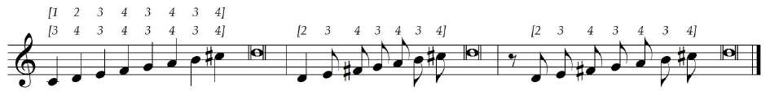
Three variations of the ascending scale: 3-4-3-4-3-4, 2-3-4-3-4-3-4, and 1-2-3-4-3-4-3 · click to enlarge
Right hand descending — three variations
Variation 1 — for quarter notes:
3232...
Variation 2 — for eighth notes (with thumb-under!):
321321...
Variation 3 — for eighth notes in odd numbers (5, 9, 13):
Eighth-note sequences: descending 4-3-2-1-4-3-2-1 (left) and ascending 1-2-3-4-1-2-3-4 (right), with the thumb-under between each group
★ Historical detail
It is remarkable that Sancta Maria, in 1565, already describes systematically the
thumb-under technique in long scales —
a technique generally attributed to J. S. Bach almost two centuries later. Rameau would defend it
explicitly in 1724. Couperin, in 1717, still hesitates: he cultivates the crossing of finger 3
over finger 2.
Original musical examples (facsimile from the UFRJ edition)
The following pages show the musical examples with fingerings annotated by the
translators, exactly as they appear in the 2013 edition. Click to enlarge.
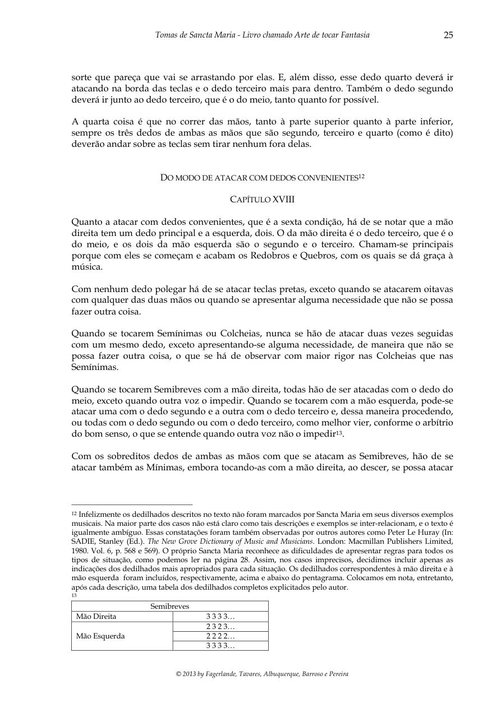
Scales in quarter notes and eighth notes
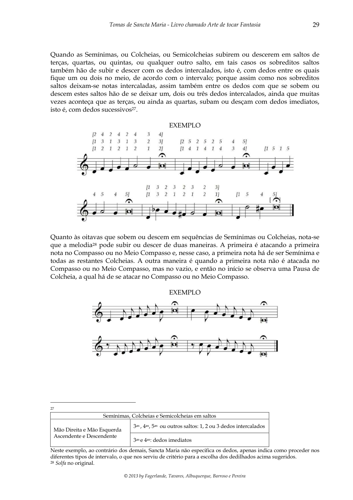
First short octave
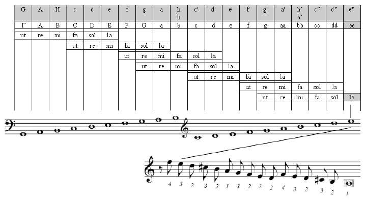
Hexachord and fingered scale
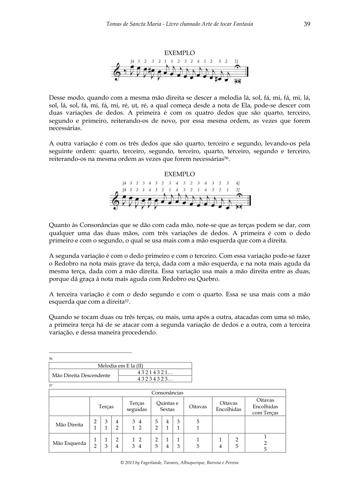
Three ways of eighth notes (notes inégales)
Extended octaves — examples
For the regular ("extended") keyboard octave, Sancta Maria offers fingering variations
for both quarter notes and eighth notes:
Example · Extended octaves in quarter notes (left hand)
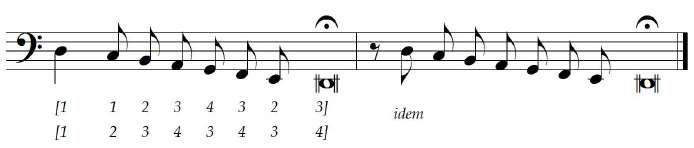
Fingering variations: 1-1-2-3-4-3-2-3 and 1-2-3-4-3-4-3-4Example · Extended octaves in eighth notes
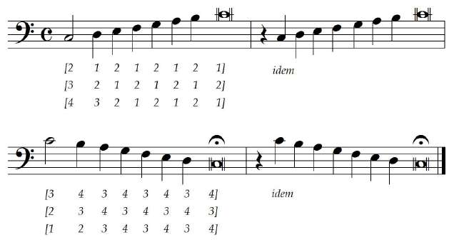
Three ascending variations (2-1-2-1, 3-2-1, 4-3-2-1) and descending (3-4-3-4, 2-3-4-3-4, 1-2-3-4-3-4)
For the full details of short octaves, specific melodies, and consonances,
see the thematic page on Fingering.
On the manner of playing with elegance (Rhythmic inequalities)
To play with elegance (buen ayre),
Sancta Maria proposes three types of inequality — a direct antecedent of the French notes inégales.
For quarter notes — one manner
"Linger on the first and run the second" — as if the first were dotted and the second were an eighth note.
♩ ♩ ♩ ♩ → ♩.♪ ♩.♪
"The quarter note that is run should not go very fast but rather somewhat moderately."
Example · Ch. XIX
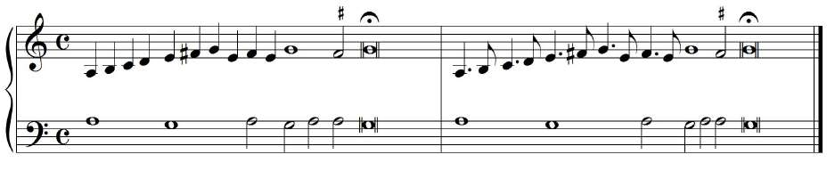
Examples of the application of the three manners to eighth notes — observe the dots above the noteheads that must strike at the mid-measureExample · Ch. XIX (a duo)
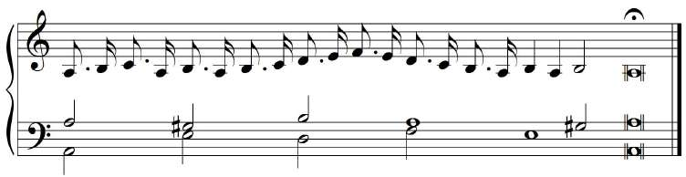
"A duo" — two-voice example illustrating the inequalities
For eighth notes — three manners
1
Dot the first, run the second
As if the first eighth note were dotted and the second were a sixteenth note. "It serves for works that are entirely contrapuntal and for long and short embellishment passages."
2
Run the first, dot the second (Lombard rhythm)
The first eighth note as a sixteenth note, the second dotted. The dotted notes do not strike on the beat, but in the gap. "This manner is much more elegant than the one described above."
3
Run three and dot the fourth
Three eighth notes as sixteenth notes and the fourth dotted — proceeding in groups of four. "This third manner is the most elegant of all."
★ Important
"The lingering of the eighth notes should not be excessive, but only hinted at and made
slightly perceptible, because too great a lingering causes ugliness and unpleasantness in
the music." — Notes inégales are subtle, not dramatic.
On the manner of performing Redoublings and Quebros
The eighth condition: the systematization of ornaments. Sancta Maria was
the first to systematize them in the history of Western music.
Definitions
Redoubling (redobro) redoble
"Notes doubled or reiterated with adjacent notes":
mi - re - mi - fa - mi - fa - mi - fa - mi
Has a note immediately below. Performed on whole notes.
Reiterated Quebro quiebro
Like the Redoubling, but without the lower note:
mi - fa - mi - fa - mi - fa - mi
Equivalent to a simple trill. Performed on half notes.
Simple Quebro
Short, of two or three notes — equivalent to the modern mordent:
mi - fa - mi or fa - mi - fa
Performed on quarter notes (alternating, one yes, one no).
Fingering for ornaments
Redoubling / Quebro with Whole and Half Step (3 fingers)
Hand
Fingering
Start → End
Right
2 3 4 3 2 3 4 3
begins and ends with 3
Left (var. 1)
3 2 1 2 3 2 1 2
begins and ends with 2
Left (var. 2)
4 3 2 3 4 3 2 3
begins and ends with 3
Reiterated Quebro on Half Notes (2 fingers)
Hand
Fingering
Right
3 4 3 4 ... 3 or 2 3 2 3 ... 2
Left
2 1 2 1 ... 2 or 3 2 3 2 ... 3
★ The four conditions for perfect Redoublings and Quebros
Bring all fingers 2, 3, 4, and 5 together close to one another. Above all, "flesh to flesh" — place the "auxiliary" finger slightly higher and rest it lightly on the principal finger.
Lift off the keys the fingers that strike the lowest and highest notes of the ornament.
The finger on the highest note at the edge of the key; gradually drawing it away until the end, "so that the ornament finishes very crisply and cleanly."
Turn the hand slightly that performs the ornament toward the upper part (except in descending quebros on quarter notes).
"Modern" beginning (with the note above)
"There is much to be noted, as a great refinement, that it is now the custom to begin the
Redoubling and the Reiterated Quebro on half notes from a note above the note on which it
ends; and furthermore, the first note must strike alone, and the second note must strike
together with whatever consonance is sounding at that moment."
— Sancta Maria, Ch. XIX[B]
This is the earliest known indication of the trill beginning on the upper note,
a practice that would persist as a rule up to Couperin: "one must always begin [the trill] on the
tone or semitone above."
Sancta Maria documents in his treatise dozens of fingering variations —
each one for a specific situation (short octaves, extended octaves, melodies in the
hexachordal system, simple and reiterated quebros, etc.). Below is the complete gallery
of musical examples from the treatise, all clickable for enlargement:
⊕ Show all examples · Ch. XVIII (short and extended octaves)
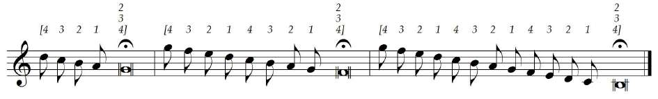
p. 28 · short octave
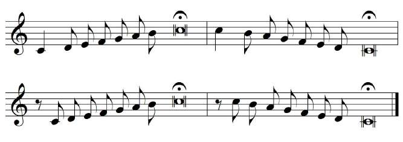
p. 29 · variation
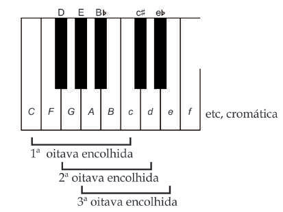
p. 30 · 2nd short octave
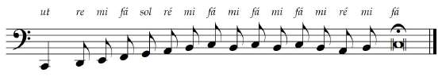
p. 30 · 3rd short octave
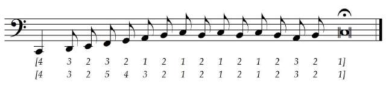
p. 31 · descending quarter notes
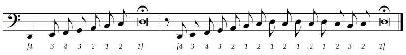
p. 31 · variation 1
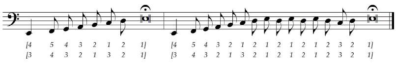
p. 31 · variation 2
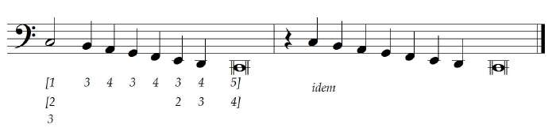
p. 32 · 2nd octave in eighth notes
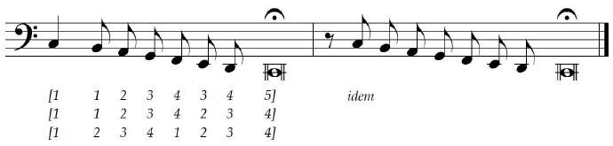
p. 32 · 3rd octave in eighth notes
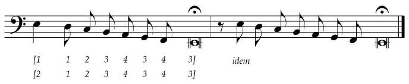
p. 33 · extended octaves v2
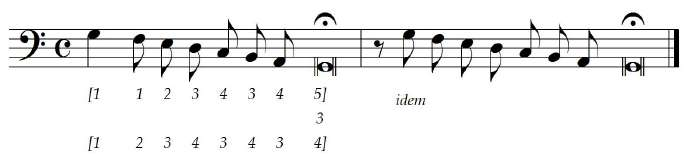
p. 35 · LH · variation 1
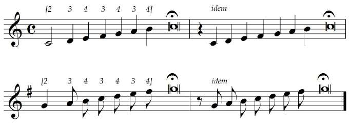
p. 35 · LH · variation 2
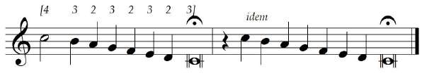
p. 36 · RH descending
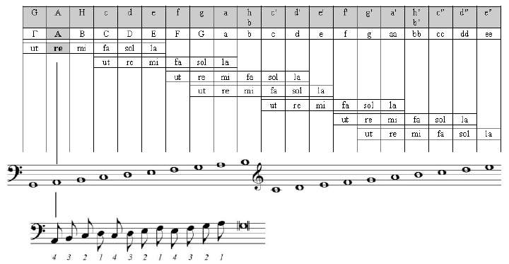
p. 36 · melody on A re
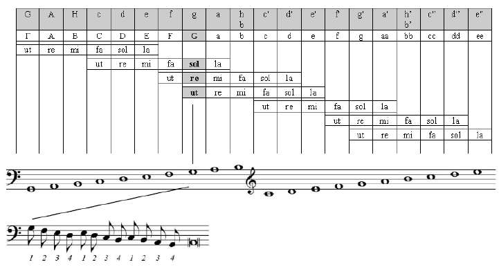
p. 37 · melody on D sol re
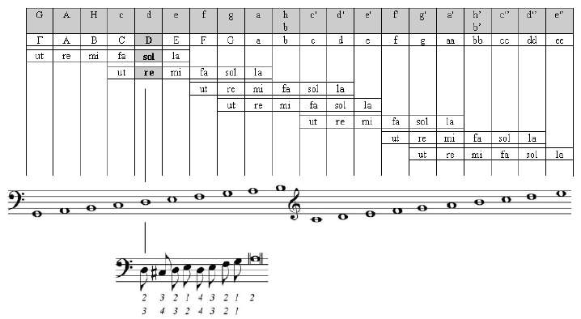
p. 38 · E la · v1
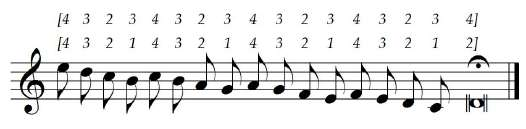
p. 39 · consonances
⊕ Show all examples · Ch. XIX (Redoublings and Quebros)